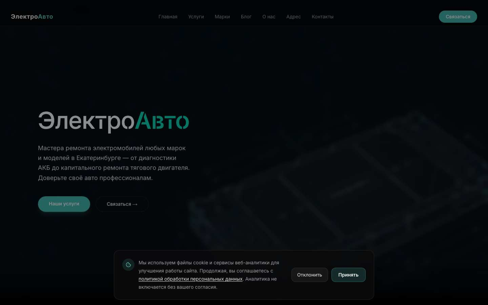
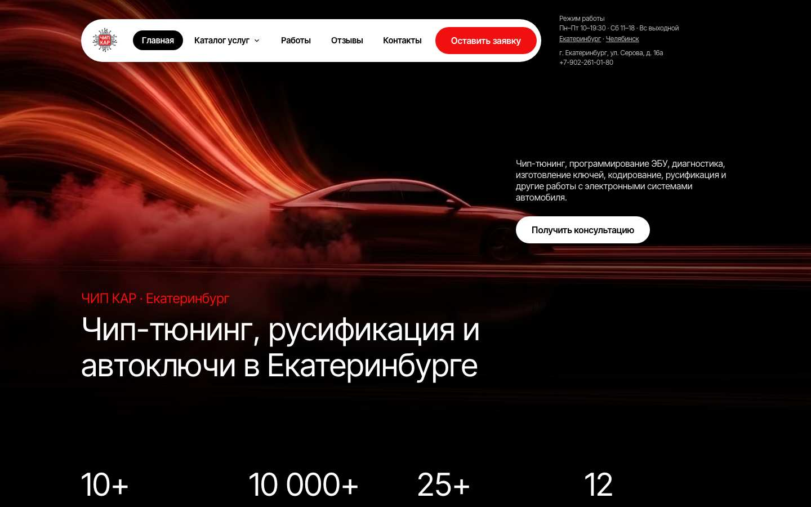
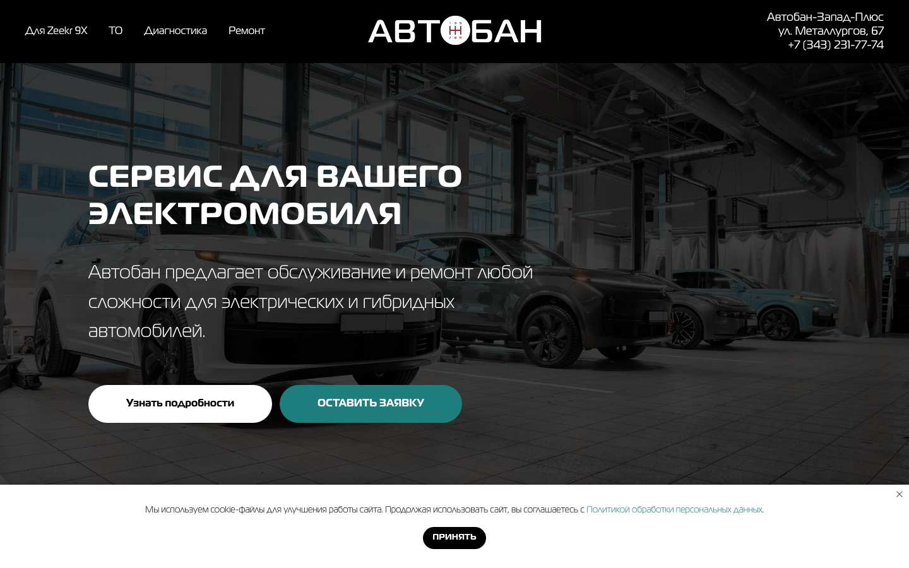
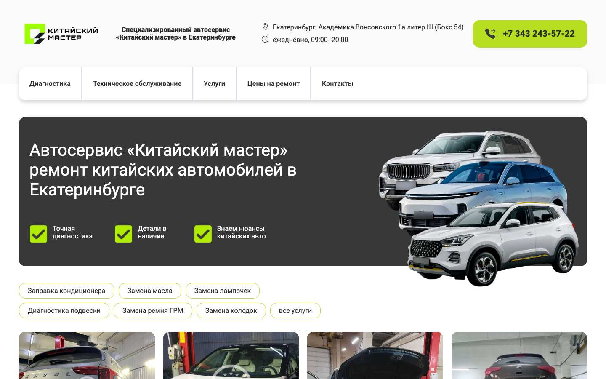
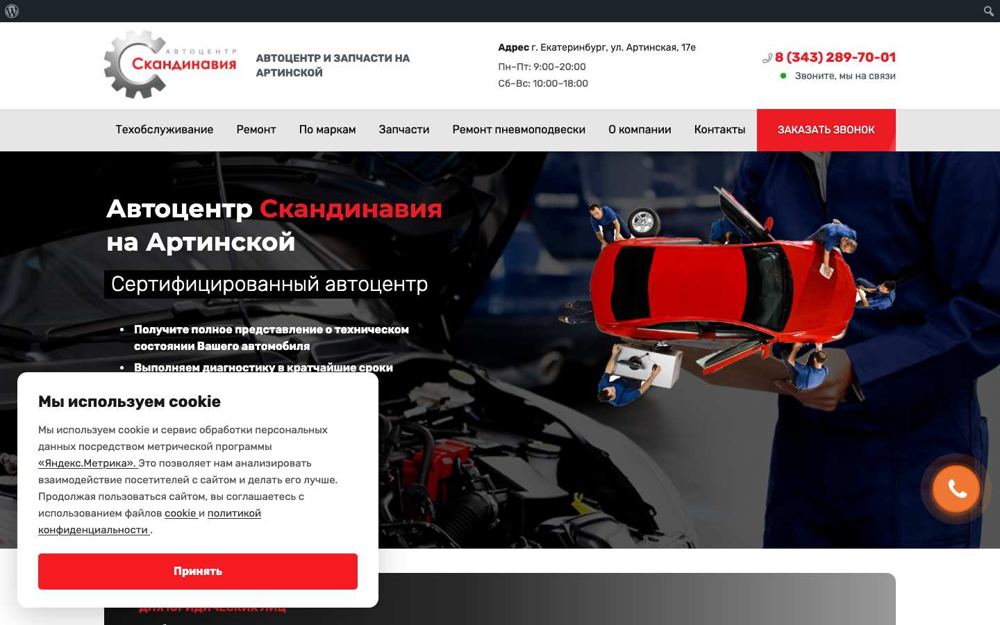
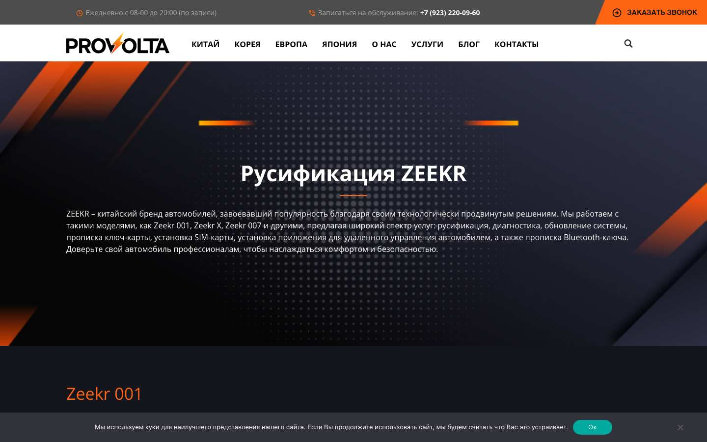
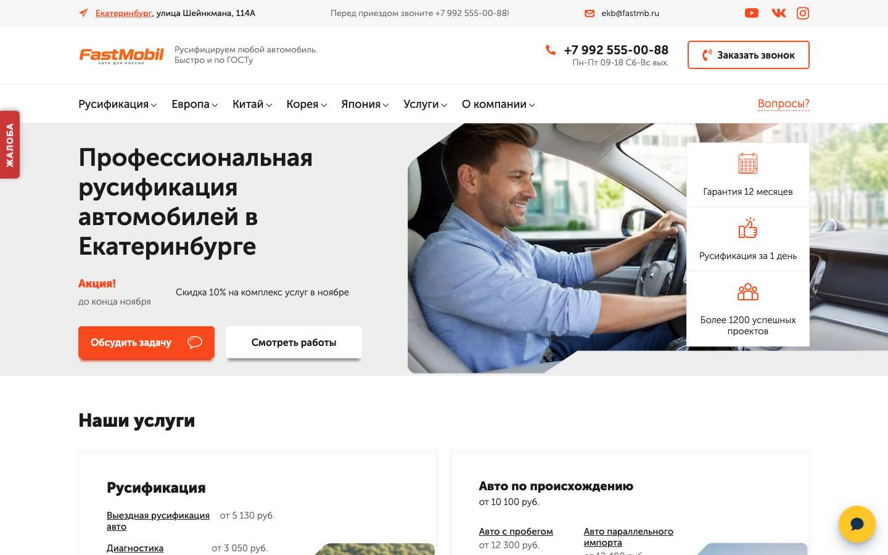
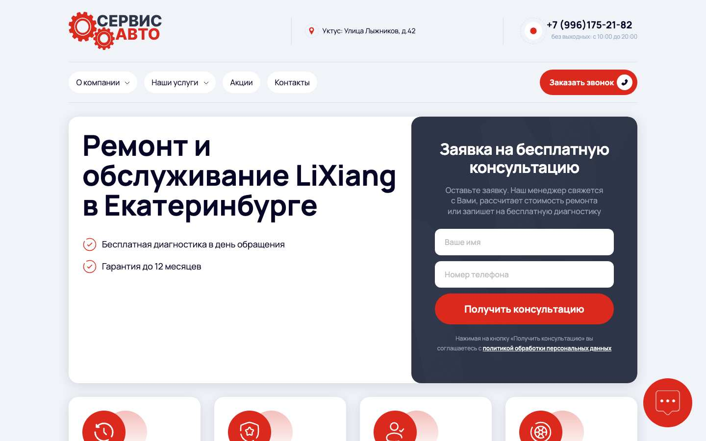

HPS Service
Самый близкий: Voyah, Li Auto, Zeekr
Карты5,0 · 81 оценка
Выдача11 из 48
Анализ рынка · данные на 8 ноября 2026
Рынок не занят целиком, но и не пуст. Спрос, конкуренты, цены и каналы продвижения сервиса китайских гибридов и электромобилей.
Запросов в месяц в Екатеринбурге по данным Яндекс Вордстата. Широкое соответствие: число показывает порядок, а не точное количество клиентов.
Написание латиницей. «Зикр» даёт ещё 4 843, «Лисян» – 2 930.
Для сравнения: «сервис lixiang» – 25, «ремонт zeekr» – 3, «русификация китайских автомобилей» – 75, «ремонт китайских автомобилей» – 36 в месяц.
| Марка | Всего | Сервис | Ремонт | ТО | Русификация | Запчасти | Прошивка | Мастер-аккаунт | Диагностика |
|---|---|---|---|---|---|---|---|---|---|
| Lixiang | 1 855 | 25 | 7 | 14 | 13 | – | 1 | 3 | 1 |
| Лисян | 2 930 | 21 | 2 | 3 | 2 | 5 | 19 | 4 | 1 |
| Zeekr | 6 027 | 16 | 3 | 3 | 35 | 24 | – | 17 | 1 |
| Зикр | 4 843 | 2 | 8 | – | 17 | 4 | 3 | 1 | – |
| Voyah | 5 307 | 10 | 6 | 26 | 12 | 3 | 7 | 9 | 2 |
| Avatr | 835 | 3 | – | – | 1 | – | – | – | – |
| Lynk & Co | 1 182 | – | – | 3 | 10 | 1 | – | 4 | – |
| Geely* | 22 343 | 26 | 42 | 127 | 43 | 66 | 75 | 17 | 7 |
| Changan* | 11 138 | 2 | 21 | 78 | 40 | 10 | 19 | 12 | – |
| Чанган* | 21 599 | 34 | 23 | 209 | 34 | 18 | 72 | 4 | 3 |
| BYD | 4 999 | – | 7 | – | 13 | 10 | 5 | 2 | 4 |
| Deepal | 1 756 | 3 | – | – | – | – | 1 | – | – |
| AITO | 907 | 3 | – | – | 10 | 1 | – | – | – |
| GAC* | 7 916 | 16 | 8 | 30 | 55 | 10 | 14 | 2 | – |
| Exlantix | 2 027 | – | – | 1 | – | 3 | – | – | – |
| Hongqi | 3 016 | 10 | – | 1 | – | 4 | – | – | – |
| Denza | 385 | – | – | – | – | – | – | – | – |
| Модель | Интерес | ТО | Ремонт | Русификация |
|---|---|---|---|---|
| lixiang l9 | 363 | – | – | 1 |
| lixiang l7 | 462 | – | – | – |
| lixiang l6 | 153 | – | – | – |
| lixiang l8 | 60 | – | – | – |
| lixiang mega | 3 | – | – | – |
| zeekr 8x | 1 666 | – | – | 19 |
| zeekr 9x | 864 | – | – | 9 |
| zeekr 001 | 810 | 2 | – | 1 |
| zeekr x | 274 | – | – | – |
| zeekr 007 | 194 | – | – | – |
| zeekr 7x | 188 | – | – | 1 |
| zeekr 009 | 139 | – | – | – |
| voyah free | 2 370 | 16 | 3 | 4 |
| voyah dream | 289 | – | – | – |
| voyah passion | 251 | 9 | – | – |
| voyah courage | 28 | – | – | – |
| avatr 11 | 202 | – | – | 1 |
| avatr 12 | 120 | – | – | – |
| avatr 07 | 47 | – | – | – |
| lynk co 900 | 374 | 3 | – | 8 |
| lynk co 06 | 89 | – | – | – |
| lynk co 09 | 87 | – | – | 2 |
| lynk co 08 | 52 | – | – | – |
| geely ex5 | 2 095 | 11 | – | – |
| geely starship 7 | 325 | – | – | – |
| geely galaxy m7 | 316 | – | – | 7 |
| changan q05 | 1 091 | – | – | 10 |
| changan a06 | 1 070 | 1 | – | 15 |
| changan uni k | 498 | 9 | – | – |
| deepal g318 | 684 | – | – | – |
| deepal s07 | 286 | – | – | – |
| byd seagull | 324 | – | – | 2 |
| byd yuan up | 312 | – | – | 3 |
| byd song plus | 259 | – | – | – |
| aito m5 | 210 | – | – | – |
| aito m7 | 179 | – | – | – |
| aito m9 | 166 | – | – | 10 |
| exlantix et | 911 | 1 | – | – |
| gac s7 | 749 | – | 1 | 10 |
| xiaomi yu7 | 253 | – | – | 2 |
| Группа | Запрос | В месяц | Частые уточнения |
|---|---|---|---|
| Русификация | русификация автомобиля | 111 | русификация китайских автомобилей 75; русификация китайских автомобилей в екатеринбурге 59 |
| Русификация | русификация китайских автомобилей | 75 | русификация китайских автомобилей в екатеринбурге 59; птс русификация китайских автомобилей в екатеринбурге 8 |
| Русификация | русификация авто из китая | 34 | русификация авто из китая екатеринбург 14; сколько стоит русификация авто из китая 12 |
| Русификация и ПО | мастер аккаунт | 205 | мастер аккаунт geely 17; мастер аккаунт zeekr 17 |
| Сервис китайских | ремонт китайских автомобилей | 36 | ремонт китайских автомобилей в екатеринбурге 14; ремонт и диагностика китайских автомобилей 3 |
| Сервис китайских | автосервис китайских автомобилей | 20 | автосервис китайских автомобилей екатеринбург 10; автосервис по ремонту китайских автомобилей 3 |
| Сервис китайских | сервис китайских автомобилей | 17 | сервис китайских автомобилей екатеринбург 6; установка одис сервис с китайскими автомобилями 5 |
| Сервис китайских | то китайских автомобилей | 5 | стоимость то на китайские автомобили 1 |
| Электро | ремонт электромобилей | 110 | ремонт детских электромобилей 46; ремонт электромобилей в екатеринбурге 19 |
| Электро | обслуживание электромобилей | 49 | обслуживание электромобилей екатеринбург 20; стоимость обслуживания электромобиля 3 |
| Электро | то электромобиля | 14 | |
| Электро | сервис электромобилей | 12 | |
| Электро | диагностика электромобиля | 8 | диагностика батареи электромобиля 5 |
| Электро | ремонт батареи электромобиля | 6 | ремонт батареи китайского электромобиля 1 |
| Зарядка | установка зарядной станции для электромобиля | 40 | установка зарядных станций для электромобилей екатеринбург 13; установка зарядных станций для электромобилей в москве 2 |
| Зарядка | зарядка для электромобиля | 495 | станция для зарядки электромобилей 66; зарядки для электромобилей в екатеринбурге 55 |
| Гибриды | ремонт гибридов | 31 | ремонт гибридов в екатеринбурге 4 |
| Гибриды | ремонт гибридных автомобилей | 21 | ремонт батареи гибридных автомобилей 7; ремонт высоковольтных батарей для гибридных автомобилей 5 |
| Гибриды | диагностика гибрида | 12 | |
| Подвеска | ремонт пневмоподвески | 114 | ремонт пневмоподвески екатеринбург 48; ремонт пневмоподвески мерседес 9 |
| Детейлинг | шумоизоляция автомобиля | 614 | шумоизоляция автомобиля в екатеринбурге 114; шумоизоляция автомобиля купить 92 |
| Детейлинг | антикор автомобиля | 416 | обработка антикором автомобиля 181; антикор екатеринбург обработка автомобиля 149 |
| Детейлинг | оклейка автомобиля пленкой | 258 | оклейка пленкой автомобиля екатеринбург 134; оклейка автомобиля антигравийной пленкой 26 |
| Детейлинг | керамика автомобиля | 47 | керамика для кузова автомобиля 25; покрыть автомобиль керамикой 14 |
| Сайт | Попаданий | Лучшая позиция | Движок | Страниц в sitemap |
|---|---|---|---|---|
| electroavto.com | 20 | 1 | Next/React | 27 |
| chinnamon.ru | 13 | 5 | Astro | 1515 |
| ekb.navimotors.ru | 13 | 1 | WordPress | – |
| екатеринбург.русификацияавто.рф | 13 | 2 | WordPress | 58 |
| axto.ru | 12 | 2 | ? | 290 |
| atfexpert-ekb.ru | 12 | 1 | WordPress | 2817 |
| bromise.ru | 11 | 1 | Next/React | 726 |
| hpservice.pro | 11 | 1 | ? | – |
| ekb.fastmb.ru | 10 | 2 | ? | 258 |
| autoadapt.ru | 9 | 1 | WordPress | 8475 |
| avtoban-service.ru | 9 | 1 | ? | 30000 |
| kitaiskimaster96.ru | 8 | 6 | ? | – |
| ekb.rusifix.ru | 8 | 4 | ? | – |
| electro.avtoban-service.ru | 7 | 5 | Тильда | 4 |
| russification.ru | 7 | 5 | ? | 233 |
| premium-al.ru | 6 | 3 | Тильда | 4 |
| teslase.ru | 6 | 1 | Next/React | 1 |
| autohype96.ru | 6 | 3 | WordPress | 988 |
| avtoban-zeekr.ru | 6 | 1 | Тильда | 18 |
| автобан.рф | 5 | 5 | ? | – |
| new.teslase.ru | 5 | 5 | ? | – |
| hybridservis.ru | 4 | 1 | Joomla | 2312 |
Вправо – чаще в выдаче Яндекса, вверх – больше оценок на Картах (шкала логарифмическая). Тёмные точки – сервисы, самые близкие к GRAFIT.
Автобан – карточка на ул. Металлургов, 67, рубрика «автосалон». Сеть *-remont – оценки организации по тому же адресу. Chinnamon, ProVolta и ФастМобил на схеме нет: их карточки найти не удалось.
Самый близкий: Voyah, Li Auto, Zeekr
Карты5,0 · 81 оценка
Выдача11 из 48

Первый в выдаче, марки с Lixiang и Zeekr
Карты4,4 · 7 оценок
Выдача20 из 48

Tesla, Li Auto, Zeekr, батареи
Карты4,9 · 91 оценка
Выдача14 из 48

Главный в русификации
Карты5,0 · 205 оценок
Выдача3 из 48
electroavto.com, ул. Рубежная, 6. Вт–Сб 10–19.
Плюс: понятная структура марка и услуга. Минус: мало оценок и нет цен на сайте. Что взять: структуру «ремонт по маркам» и разметку.
electro.avtoban-service.ru, avtoban-zeekr.ru, ул. Металлургов, 67. Большая группа, официальный Zeekr и Lynk & Co.

Плюс: статус официального сервиса и большая группа компаний. Минус: только две марки на лендинге, нет Voyah. Что взять: короткую цену в первом экране.
hpservice.pro, Корейский пер., 10. Специализация Voyah, Li Auto, Zeekr – самый близкий и, по данным, самый сильный прямой конкурент.
Плюс: точный оффер на три марки, сильная карточка и выдача сразу. Минус: одна страница, Avatr и Lynk & Co нет. Что взять: перечень работ от ТО до высоковольтных систем.
premium-al.ru, ул. Шефская, 2Г-2, и пр. Космонавтов, 8. Группа Автолидер, дилер Voyah.

Плюс: два адреса и цены. Минус: одна из самых высоких цен, по сути одна страница. Что взять: таблицу цен по маркам на главной.
teslase.ru, new.teslase.ru и zeeker-ekb.ru (один адрес и телефон, тексты отличаются), ул. Кольцевая, 39А.
Плюс: глубокая техника батарей. Минус: адреса дублируются, цен нет. Что взять: подробное описание работ с батареей, если это умеет мастер GRAFIT.
chinnamon.ru. Сеть сервисов китайских авто и электромобилей: Москва, Петербург, Екатеринбург, Тюмень. Адрес филиала уточняется: сайт показывает его после выбора города.

Плюс: самая большая матрица страниц, специализация. Минус: много страниц одного шаблона. Что взять: бесплатный эвакуатор как предложение, если партнёр его потянет.
kitaiskimaster96.ru, ул. Академика Вонсовского, 1АШ. В основном Geely, Changan и другие бензиновые.

Плюс: цены по всем работам. Минус: слова «электромобиль» и «гибрид» на главной нет. Что взять: подход «вся стоимость на сайте».
atfexpert-ekb.ru, ул. Артинская, 17Е. Общий сервис с большим сайтом.

Плюс: сайт большой и старый. Минус: не специалист по китайским, это видно по странице. Что взять: страницы услуг под запросы в Екатеринбурге, но со своей пользой.
hybridservis.ru, ул. 8 Марта, 267Г. Гибриды, в основном японские.

Плюс: репутация и форум, давно на рынке. Минус: на сайте нет упора на новые китайские машины. Что взять: карточку на Картах как эталон.
chipcar66.ru, ул. Серова, 16А, и Челябинск. Русификация, чип-тюнинг, ключи.
Плюс: лидер карт в русификации, сильный прайс. Минус: чип-тюнинг и русификация, а не сервис китайских машин. Что взять: прайс на Картах, из-за которого карточка выходит в выдаче. Главный конкурент на русификацию.
екатеринбург.русификацияавто.рф, ул. Большевистская, 111А. Сеть русификации. В вашем списке отмечена отдельно: уточните, партнёр ли это.

Плюс: цена по каждой модели и работе. Минус: на сайте работы только по ПО, сервиса нет. Что взять: прайс по моделям.
ekb.fastmb.ru (ул. Шейнкмана, 114А) и ekb.navimotors.ru. Русификаторы, у которых город вынесен на поддомен. Есть ли у NAVIМоторс точка в городе, уточняется.

Плюс: широкий охват запросов поддоменом. Минус: низкая цена «от» без объяснения. Что взять: поддомен города, как и задумано у GRAFIT.
ekaterinburg.lixiang-remont.ru и соседи. На всех один телефон и адрес: ул. Лыжников, 42; там на Картах АвтоПилот. Связь сайтов с ним не подтверждена.

Плюс: закрывает запросы массовым шаблоном. Минус: страницы одного шаблона, на сайте Voyah работы вроде ТО АКПП и ГРМ, которые надо сверять с устройством машины. Что взять: ничего: такой подход рискован для сайта.
| Компания | Выдача (из 48) | Карты: оценка / оценок | Цены | Марки | Русификация | Реклама | Страниц |
|---|---|---|---|---|---|---|---|
| ЭлектроАвто | 20, лучшая 1 | 4,4 / 7 | на Картах | 11 страниц марок, без Lynk & Co | да | нет | 27 |
| Тесла Сервис (3 адреса сайта) | 14, лучшая 1 | 4,9 / 91 | нет | Tesla, Li, Zeekr, Lynk, Geely | да | нет | лендинги |
| Автобан Электро + Zeekr | 13, лучшая 1 | 4,4 / 101 (автосалон) | ТО и диагностика | Lixiang, Zeekr | да, Zeekr | нет | 4 + 18 |
| Chinnamon (сеть, есть филиал) | 13, лучшая 5 | не найдено | на сайте цен нет | все китайские | не видно | нет | 1 515 |
| ProVolta Екб | 13, лучшая 2 | не найдено | подробно по моделям | 7 | да | нет | 58 |
| Скандинавия | 12, лучшая 1 | 4,5 / 302 | прайс | 7, с Toyota | нет | нет | 2 817 |
| HPS Service | 11, лучшая 1 | 5,0 / 81 | несколько цен | Voyah, Li, Zeekr | по ПО | да, 1 | одна страница |
| ФастМобил | 10, лучшая 2 | не найдено | от 2 500 | 9 | да | нет | 258 |
| Китайский мастер | 8, лучшая 6 | 4,8 / 17 | большой прайс | Geely, Changan | нет | нет | нет sitemap |
| Сеть *-remont.ru | 7, лучшая 2 | адрес: 4,6 / 244 | «от» минимальные | по сайту на марку | нет | нет | 360+ на сайт |
| Автолидер (premium-al) | 6, лучшая 3 | Electro без оценок, дилер 4,7 / 86 | подробно, русификация | 5 | да | нет | лендинг |
| Гибрид-Сервис | 4, лучшая 1 | 5,0 / 301 | на Картах | гибриды | на Картах | нет | 2 312, форум |
| Чипкар | 3, лучшая 8 | 5,0 / 205 | на Картах | все | да | нет | 125 |
| GRAFIT (сейчас) | 2, лучшая 9 | нет точки | Москва | 5 | да | нет | 64 |
Отзывы на Яндекс Картах о HPS, Тесла Сервис, ЭлектроАвто, Чипкаре, Гибрид-Сервисе, Китайском мастере и Автобане: 431 отзыв на 8 ноября 2026. Почти все на 5 звёзд, поэтому важнее, о чём пишут, чем средняя оценка.
Эти темы почти не встречаются в отзывах, то есть клиентам их либо не дают, либо не показывают. Здесь GRAFIT может выделиться.
У HPS заметная часть отзывов про Honda и Toyota, в одном прямо пишут, что раньше это был сервис Honda и Toyota. Опыт с китайскими машинами там моложе, чем выглядит по рейтингу.
Что обещать клиенту: понятное объяснение от мастера, запись без недельной очереди, цена и гарантия письменно, отчёт с фото и оплата любым способом. Ровно то, чего не хватает у сильных конкурентов.
Публичные цены с сайтов и Яндекс Карт, как написано у компании. Реальная цена может отличаться. Цены GRAFIT – московские.
Конкуренты в ЕкатеринбургеGRAFIT, Москва. Шкала от 0 до 150 000 ₽
| Что | Автолидер (premium-al) | ProVolta Екб | EVpapa (Пермь, Екб, Ижевск) | ЭлектроАвто | АКСТО (федер.) | GRAFIT Москва |
|---|---|---|---|---|---|---|
| Lixiang | 120 000 | от 55 000; комплекс 110 000 (Ultra 135 000) | снятие ограничений 27 500–38 500 | 5 000 (мультимедиа) | 35 000–90 000 | от 55 000 |
| Zeekr 001 | планшет от 72 000 | от 15 000 | 45 000 | 5 000 (мультимедиа) | 40 000–250 000 | от 45 000 |
| Voyah | 110 000 | 70 000 | нет цены | 5 000 (мультимедиа) | 50 000–150 000 | Free от 18 000 |
| Geely | Monjaro 60 000 | нет цены | Monjaro 2026 под ключ 50 000 | нет цены | 30 000–100 000 | в прайсе нет |
| Мастер-аккаунт | Zeekr 001: 95 000 | Zeekr: 85 000 | не нашёл | нет цены | восстановление: на разных страницах от 20 000 и от 60 000 | Zeekr: от 60 000 |
| Слот SIM | нет цены | 20 000–50 000 | активация 20 000 | нет цены | пайка от 80 000 | от 15 000 до от 30 000 |
| Что | Автобан Электро | HPS | ЭлектроАвто | Гибрид-Сервис | Китайский мастер | GRAFIT Москва |
|---|---|---|---|---|---|---|
| Диагностика | 15 000 | от 5 000 | 9 000 | 2 400 | от 1 400 | Zeekr ZDS от 10 000 |
| Плановое ТО | от 15 000 (Lixiang, Zeekr) | от 18 000 | 25 000 | 1 800 | нет цены | полное: Zeekr от 22 000, Lixiang от 36 000 |
| Батарея HV | нет цены | нет цены | 50 000 | нет цены | нет цены | нет цены |
| Осмотр ходовой | нет цены | от 2 300 | нет цены | нет цены | от 600 | бесплатно, 39 параметров |
| Рекламодатель | Объявлений | По каким запросам | Что обещает |
|---|---|---|---|
| kibercar.com | 7 | русификация, Lixiang, Zeekr, Avatr | «Комплексная русификация», гарантия, консультация |
| aac-dt.ru (АвтоАудиоЦентр) | 6 | русификация, Lixiang, Zeekr, Voyah | Русификация, интернет, приложения |
| obnoviauto.ru | 2 | русификация, Lixiang | Цена по марке и году |
| autoservice-km.ru (Крутящий Момент) | 4 | сервис Geely, Changan | Адрес и телефон сервиса |
| hpservice.pro | 1 | русификация Voyah | Сервис VOYAH, Li Auto, ZEEKR |
| Дилеры (Оками, Asmoto) | 5 | сервис и ремонт Voyah, Geely, русификация Voyah | Официальный дилер |
| Компания | Оценка | Оценок | Отзывов | Что там |
|---|---|---|---|---|
| Крутящий Момент | 4,9 | 1 152 | 508 | общий сервис, рекламируется по Geely и Changan |
| Автобан (основной сервис) | 4,7 | 825 | 293 | мультибренд, 45 позиций прайса |
| Скандинавия | 4,5 | 302 | 125 | общий сервис |
| Гибрид-Сервис | 5,0 | 301 | 140 | гибриды, «Хорошее место 2026» |
| АвтоПилот, ул. Лыжников, 42 (адрес сети *-remont) | 4,6 | 244 | 129 | общий сервис |
| Чипкар | 5,0 | 205 | 166 | русификация, чип-тюнинг, 22 позиции прайса, «Хорошее место 2026» |
| Автобан, ул. Металлургов, 67 | 4,4 | 101 | 43 | рубрика «автосалон» |
| Тесла Сервис | 4,9 | 91 | 29 | профильный |
| Voyah Автолидер | 4,7 | 86 | 33 | дилер |
| HPS | 5,0 | 81 | 33 | самый близкий по маркам |
| Китайский мастер | 4,8 | 17 | 15 | 65 позиций прайса, бензиновые китайцы |
| ЭлектроАвто | 4,4 | 7 | 6 | профильный, 4 услуги с ценами |
| Avtoban Lynk & Co, Zeekr; Автолидер Electro; АВС Сервис | нет оценок | 0 | 0–1 | карточки есть, оценок нет |
Кто из конкурентов ведёт Instagram и ВКонтакте, насколько стабильно и сколько собирают ролики.
Данные на 8 ноября 2026, Reels за последние 3 месяца.
| Аккаунт | Кто это | Подписчики | Reels за 30 дней | Reels за 90 дней | Медиана просмотров | Лучший ролик |
|---|---|---|---|---|---|---|
| kibercar.ru | КиберКар, федеральный, рекламируется в городе | 174 003 | 27 | 36 | 8 961 | 29 841 |
| zeekr.ekb | Zeekr Екатеринбург, дилер | 7 838 | 11 | 36 | 1 404 | 96 074, в закрепе |
| autohype96 | АвтоХайп, тюнинг и детейлинг | 4 587 | 2 | 11 | 11 180 | 17 163 |
| okami_ekb | Оками, дилер | 4 230 | 11 | 27 | 1 356 | 24 855 |
| provolta.ru | ProVolta, сеть русификации | 3 538 | 2 | 6 | 820 | 132 551 |
| avtoban_ekb | Автобан, группа | 1 030 | 0 | 0 | – | не ведётся |
Данные на 8 ноября 2026. Сообщества смотрели без входа: видны подписчики, даты последних постов и просмотры клипов.
| Сообщество | Кто это | Подписчики | Как ведут | Клипов всего | Медиана просмотров, 12 последних клипов | Лучший из 12 |
|---|---|---|---|---|---|---|
| kibercar | КиберКар, федеральный | 6 800 | стабильно, 6 постов за месяц | 53 | 3 100 | 51 600 |
| autohype96 | АвтоХайп, тюнинг и детейлинг | 6 500 | стабильно, 7 постов за месяц | 360 | 1 100 | 9 200 |
| okami_ekb | Оками, дилер | 4 000 | стабильно, 8 постов за месяц | 335 | 880 | 5 700 |
| aactuning | АвтоАудиоЦентр, тюнинг и русификация | 3 800 | 2 поста за месяц | 569 | 800 | 5 400 |
| club14279093 | Автогост, техцентр | 2 400 | 2 поста за месяц | – | – | – |
| avtobanekb | Автобан, группа | 1 400 | стабильно, 6 постов за месяц | 1 166 | 223 | 396 |
| avantservice | Авант, автосервис | 1 000 | 2 поста за месяц | 17 | 466 | 1 800 |
| provolta | ProVolta, сеть русификации | 901 | последний пост 3 месяца назад | 33 | 388 | 7 100 |
| proautochina | ПроАвто, электромобили и гибриды из Китая | 606 | стабильно, 6 постов за месяц | 73 | 152 | 607 |
| chipcar66 | Чипкар | 348 | 1 пост за месяц | 115 | 117 | 305 |
| club101136978 | Airmatik, ремонт пневмоподвески | 229 | 6 постов за месяц | – | – | – |
| skandinaviaekb | Скандинавия | 115 | 1 пост за месяц | 1 | 139 | 139 |
| zeekr_ekb | Zeekr Екатеринбург, дилер | 29 | 6 постов за месяц | 60 | 17 | 107 |
| autochina | Авточина, сервис и запчасти | 622 | не ведётся больше года | – | – | – |
Видимость в ответах нейросетей Яндекса и Google по тем же 48 запросам, 8 ноября 2026.
Сколько ответов из 15 ссылаются на источник. Кого цитирует Нейро Яндекса, пока не видно: сам блок есть, а его текст мы не получили.
Вывод: зайти в ответы нейросетей по этим запросам вполне реально, если делать нормальное SEO. Сильных сайтов у профильных конкурентов нет, а нейросети опираются на те же сайты, карты и справочники, что и поиск.
Сначала база. Без неё остальные каналы не дают заявок.
Скачать все таблицы (Excel): спрос, цены, сайты, карты, выдача, реклама.